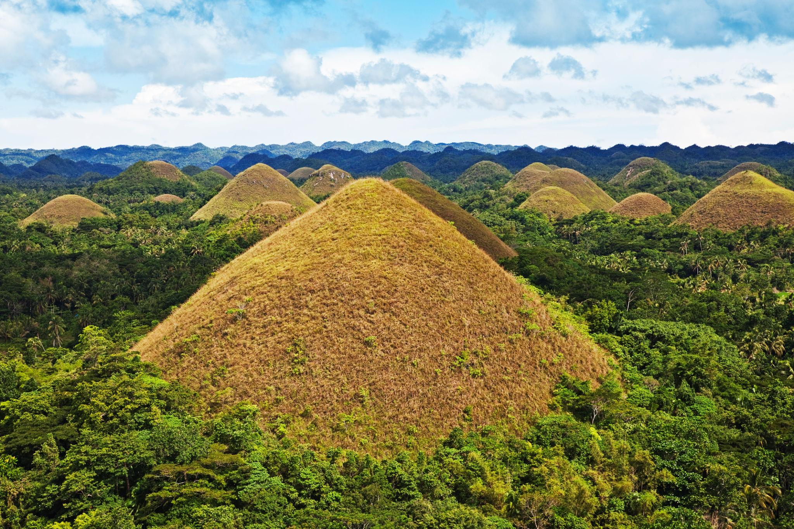
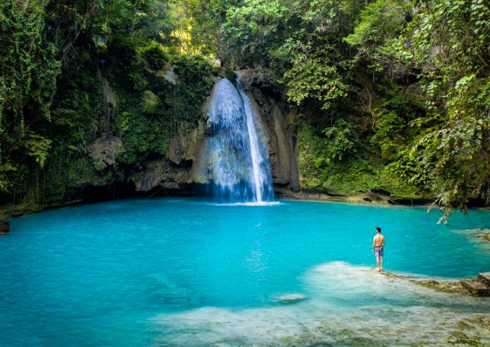
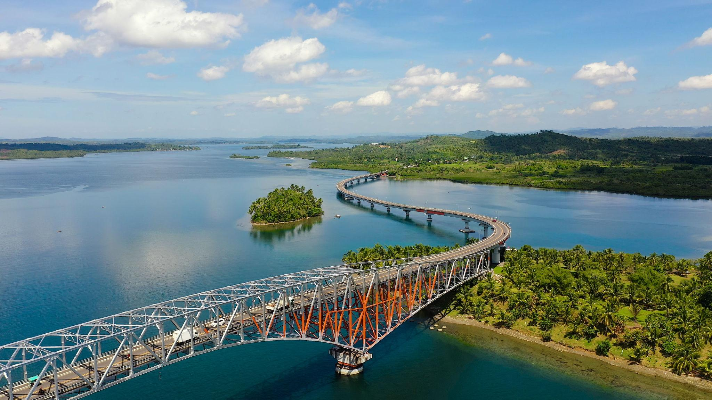

Tourist Spots



The Visayas is home to several famous tourist attractions that showcase its natural beauty and historical heritage.
Recommended tourist spots:
- Chocolate Hills (Bohol) - A group of more than a thousand unusual cone-shaped hills that turn brown during the dry season.
- Kawasan Falls (Cebu) - A beautiful multi-level waterfall famous for its turquoise-colored water.
- Magellan's Cross (Cebu) - A historical landmark associated with the arrival of Christianity in the Philippines in 1521.
- San Juanico Bridge (Leyte-Samar) - A famous bridge connecting the islands of Leyte and Samar.
- Tarsier Sanctuary (Bohol) - A conservation area where visitors can learn about the Philippine tarsier.